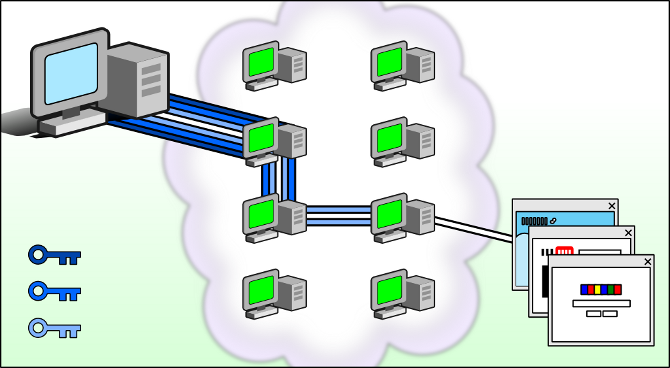
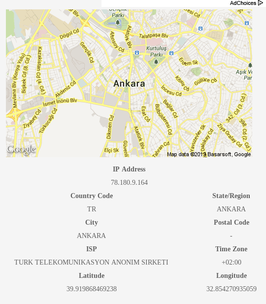

TOR (The Onion Router) [1], tek cümle ile anlatacak olursak, çevrimiçi gizliliğinizi sağlayan özgür bir tünelleme yazılımıdır. Sizi, herhangi bir ağ gözetleme ya da ağ akış analizlerinden kaçındırmak için, gönüllü aktarıcılar (relay) üzerinden, şifrelenmiş şekilde İnternet’e bağlar. Bu da İnternet’te gezinme, çevrimiçi mesaj ya da anında mesajlaşma ve web üzerindeki herhangi bir iletişim biçimini, anonim olarak yapmanıza olanak verir. Bunu, düz bir ana yolda ilerleyerek hedefe ulaşmak yerine, arka sokaklardan sağ-sol yaparak aynı yere gitmeye benzetebiliriz.
TOR, Birleşik Devletler Deniz Kuvvetleri Araştırma Laboratuarları’nın gelişridiği “soğan yönlendirme (onion routing)” sistemi üzerine kuruludur (DARPA). Ancak kullanılan sistemin dayandığı nokta burası. TOR Projesi, şu an resmi olmayan bir eğitim ve araştırma vakfı hâlinde gelişiyor. Yani, BSD lisansına sahip TOR Projesi, topluluk üzerinde. ABD ordusuyla falan bir alakası hiç yok.
Sisteme “soğan” denmesinin sebebi, çalışma biçiminin üst üste katmanlardan oluşması. Aynı bir soğan gibi yani.

Yukarıdaki grafik, TOR’un çalışma sistemini gösteriyor. TOR’u çalıştırdığınızda, bilgisayarınızdan çıkan veri 3 kademeli olarak şifrelenir ve TOR yansıtıcılarına gönderilir. Veri, TOR ağında bulunan rastgele ve her veri aktarımında da değişen bir yansıtıcı bilgisayara yönlendirilir. İlk katman, birinci şifreyi çözerek, veriyi ikinci katmana yansıtır. İkinci katman ise, kendi şifresini çözerek, üçüncü katmana yönlendirme yapar. Üçüncü ve son katman ise, veriyi İnternet’e ulaştırır. Bu işlemde izlenen rota, her veri transferi talebinde de rastgele olarak değişir. Bu da verinin ilk olarak kimden geldiğinin takibini imkânsız hâle getirir.
Ancak TOR, kendi ağı ve yansıtıcıları arasındaki veri akışını şifreleyebilse de, TOR ağı ve İnternet arasındaki veriyi şifreleyemez. Yani ağa giriş ve ağdan çıkış noktaları belli olduğu için, ağ akış trafiği analizi yapılamasa da akış trafik doğrulaması gizlenemez.
İkinci olarak TOR, Firefox’un uyarlanmış bir sürümünü kullanmaktadır. Ayarlamalarla kendi web tarayıcınız için de TOR’u kullanabilirsiniz. Ancak yapılandırmayı düzgün yapamazsanız, gizleme sağlayamayabilirsiniz. Bu yüzden, TOR ile gelen tarayıcıyı kullanmanızı tavsiye edeceğim.
TOR, yukarıda belirttiğimizi gibi, webde gezinme, anında mesajlaşma ve sitelere yorum yazma gibi unsurları gizleyebilir. Ancak, TOR tarayıcısına kuracağınız eklentiler (plugin) ve 3. parti yazılımlar (indirme yöneticileri gibi) TOR’un şifrelemesi dışında çalışarak açığa çıkmanıza sebep olur. Bunları kullanmaktan kaçının ve TOR tarayıcısına eklenti kurmayın. Yine TOR üzerinden indirmiş olduğunuz belgeler (DOC ve PDF gibi) çevrimiçi olarak açtığınızda, İnternet üzerinden veri aktarımı fonksiyonu göstererek, açığa çıkmanıza sebep olabilirler.
TOR, kendi ağı ve İnternet arasındaki veriyi şifreleyemese de arada bir güvenli katman (SL – secure layer) kullanan sitelerde, bu aradaki veri de şifrelenecektir. Yani “https://” ile başlayan adreslerde. Yine de, veri şifrelense bile, eğer bir hesaba giriş yapacaksanız, kendiniz açığa çıkarırsınız.
Gelelim TOR’u nasıl kurup kullanacağımıza. Yukarıda anlatılanlar karmaşık bir sistem gibi gelebilir belki ama hiç de öyle değil. TOR’u indirip de sıradan bir istemci olarak çalıştırmak için herhangi bir yapılandırma ya da ayar yapmaya ihtiyacınız yok. Tek yapmanız gereken, sayfasından [2] TOR’un sisteminize uygun sürümünü (32 ya da 64 bit) olanını indirip, inen *.tar.gz dosyasının içindeki “start-tor-browser” dosyasını çalştırmak.
Bu dosyayı çalıştırdığınızda, önünüze Vidalia kontrol paneli gelecek. Tek yapacağınız, TOR’un ağa bağlanmasını beklemek. Ardından otomatik olarak Firefox (sizin tarayıcını değil elbette) başlayacak ve TOR’un koruması altında gezinmenize başlayabileceksiniz.

Evet. Uygulama Türkçe desteğine sahip. :-) Ancak açıldığında İngilizce geliyor. Türkçeye çevirmek için “Settings” altındaki “Appearance” sekmesindeki “Language” kısmını Türkçe yaparak “OK” düğmesine basın. Ancak altındaki temayı ben değiştiremedim. Ne zaman denesem, Vidalia kapandı. Vidalia kontrol paneli açıldığı anda, en üstte TOR ağına bağlantı durmunu gösteren bir bar dolmaya başlayacaktır. Görüntüde görüldüğü üzere, yeşil soğan logosunun yanında “Tor ağına bağlandı!” mesajı, TOR’un başladığı anlamına gelir. Aynı şekilde bu soğan simgesi, sistem çekmecenize de yerleşir. Eğer TOR bağlantı sağlyamazsa:
İlk olarak bir Proxy ya da güvenlik duvarı (Firewall) ardında iseniz, bunları ayarlamanız gerekir. Proxy için, Vidalia panelinden “Ayarlar”a girin ve “Ağ” sekmesi altındaki “İnternet erişimimde Proxy kullanıyorum” ayarının yanındaki kutucuğu işaretleyerek, açılan Proxy bilgisi alanlarını (proxy adresi, bağlantı portu, kullanıcı adı ve şifre (şifre gerektiriyorsa) gibi) doldurun ve “Tamam” düğmesine basın. TOR, Proxy üzerinden çıkış yapacaktır. Güvenlik duvarı içinse iki yöntem var:
İlki güvenlik duvarını yapılandırmak. Vidalia, “Ayarlar”, “Gelişmiş” sekmesi altında TOR’un bağlantı bilgilerini bulabilirsiniz. Mesela bende 9151 numaralı portun kullanıldığı görülüyor. Güvenlik duvarınızı, burada gördüğünüz porta izin verecek şekilde yapılandırmanız gerekiyor. Yine modeminizde NAT yönetiminden bu portu ulaşıma açmanız gerekebilir. Bu artık pek geçerli bir yol değil. Pek çok standart modem, artık NAT ayarlarını kendisi otomatik yapıyor. Ancak çok eski modemlerde, elle bu portu açmak gerekebilir. Var mı aranızda, ilk çıktığı zamanlarda çok oyunculu olarak İnternet üzerinden Starcraft ya da Age of Empires oynayan? Varsa ne demek istediğimi anlamıştır. :-D
İkinci yöntem ise, güvenlik duvarını yapılandıramamanız durumunda, TOR’un port ayarını değiştirip duvarın izin verdiği bir portu kullanmak. Bunun için “Ağ” sekmesi altında “Firewall sadece belli portlara izin versin” seçeneğini işaretleyerek, açılan bölüme güvenlik duvarının izin verdiği portları yazabilirsiniz.
TOR’un bağlanamamasının bir sebebi de ISP kısıtlamaları olabilir. Bunu aşmak ya da ISP kısıtlamasa da ekstradan gizlilik için, TOR aktarma köprülerini (bridge) kullanabilirsiniz. Bunun için öncelikle bir köprüye ihtiyacınız var. TOR köprülerinin mevcut durmunu “bridges” adresinden [3] öğrenebilirsiniz. Buradaki köprü adresleri ve portlarını TOR’a girmemiz gerek. Bunun için “Ayarlar” altındaki “Ağ” sekmesinden “İnternet sağlayıcım Tor ağını engelliyor” kutucuğunu işaretleyip, açılan menüye bulduğunuz köprüleri girmek. Bir tane köprü girmeniz yeterli, ancak köprülerin her zaman açık olacağı garanti değil. Bu yüzden birden fazla köprü tanımlamanzı ve zaman zaman köprü listesini kontrol edip güncellemeniz, sağlam bir bağlantı elde etmenizi sağlayacaktır.
Vidalia’nın kısa yolları basit. İlk “Tor’u Durdur / Başlat” TOR’u açıp kapatmanıza yarar. Hemen yanında “Ayna Ayarları” geliyor. Buraya “Ayarlar” -> “Paylaşım” yoluyla da erişebilirsiniz. Burası, varsayılan olarak, sadece istemci biçiminde yapılandırılmış gelir. Eğer, yukarıda bahsettiğimiz, TOR ağının gönüllü yansıtıcılarından birisi olmak isterseniz, buradan ayarlayabilirsiniz. Bu ayara dokunmazsanız, sadece istemci olursunuz ve veri yansıtılmasında bilgisayarınız kullanılmaz. Eğer ikinci seçeneğe (ara sunucu) geçerseniz, ara yansıtıcı olarak TOR ağına bağlanırsınız. Gelen veri, ara katmana yerleşen bilgisayarınızdan geçerek, bir başka TOR yansıtıcısına gider. Üçüncü seçeneği seçerseniz (son sunucu) son katmana yerleşerek, gelen veriyi doğrudan İnternet’e açan sunuculardan biri olursunuz. Farkı, gelen veri son sunucu olmanzı durumunda size kadar takip edilebilir. Ara sunucu olmanız durumunda ise üzerinizden geçen veri herhangi bir şekilde takip edilemez. Hemen bir örnek göstereyim:

Yukarıdaki görüntü, whatismyip.com adresinden, TOR kullanılmadan alındı. Site, bana gelen veriyi, hizmet aldığım servis sağlayıcısına (ISP) kadar takip edebildi. Sonrasında takip edemedi. Ancak ISP ardında benim bilgisayarım var. Elbette ben Ankara’da değil; Bursa’dayım. Ancak oldukça yaklaştı.

Aynı siteden, bu sefer TOR ağına bağlıyken talep ettiğim veri takibi bu da. Almanya’nın Nuremberg kenti. Eh, en azından Atlas okyanusunun doğru tarafında. :-) Site, bana gönderdiği veriyi, TOR ağının son sunucularından birisinin ISP’sine kadar izleyebildi. Son sunucu olmanın farkı burada görülüyor.
Alttaki “Ağı Göster” bölümünden ise gönüllü TOR yansıtıcılarının listesini görebilirsiniz. “Kimliği Yenile” kısmı da TOR ağıyla olan bağlantımızı yeniden başlatarak, yeni bir noktdan ağa girmemizi sağlar. TOR’un sağladığı sahte IP adresimiz değişir.
Alt bölümde ise TOR’un ağ ve sistem hareketleri ile ilgili kayıtlara ve can alıcı kısımlarını yukarıda zaten açıkladığımız “Ayarlar” kısmına erişebilirsiniz. Burada Vidalia ve Vidalia – TOR uyarlamaları ile ilgili ayarları yapabilirsiniz. Bunlar oldukça açık ve zaten bir sorunla karşılaşmazsanız, ihtiyacınız olmayacak ayarlar.
Diğer uygulamalarınız için TOR kullanımı ise, kullanmak istediğiniz uygulamayı Proxy kullanacak şekilde yapılandırarak, Proxy bilgilerine TOR’un ayarlarını girmek. Bu bilgileri “Ayarlar” bölümünde “Gelişmiş” sekmesi altında Tor Kontrolü’nde bulabilirsiniz. Mesela Pidgin’i TOR kullandırmak için Pidgin2in Ayarlar -> Ağ -> Proxy kısmına giderek, Pidgin’i Proxy kullancak şekilde ayarlayıp, Proxy bilgileri içinse şunları giriyoruz:
Proxy type: SOCKS 5
Host: 127.0.0.1
Port: 9151
Sizde bu değerler farklı olabilir.
Son olarak da TOR, ağ bağlantı hızınızı oldukça düşürüyor. Çünkü verileriniz, dağları denizleri hatta belki okyanusu geçerek geliyor. Pratik kullanım için tek söyleyebileceğim, yasaklı sitelere hiçbir ayar vs. gerektirmeden girebiliyorsunuz.

Kaynak:
[1] https://www.torproject.org
[2] https://www.torproject.org/download/download-easy.html.en
[3] https://bridges.torproject.org/